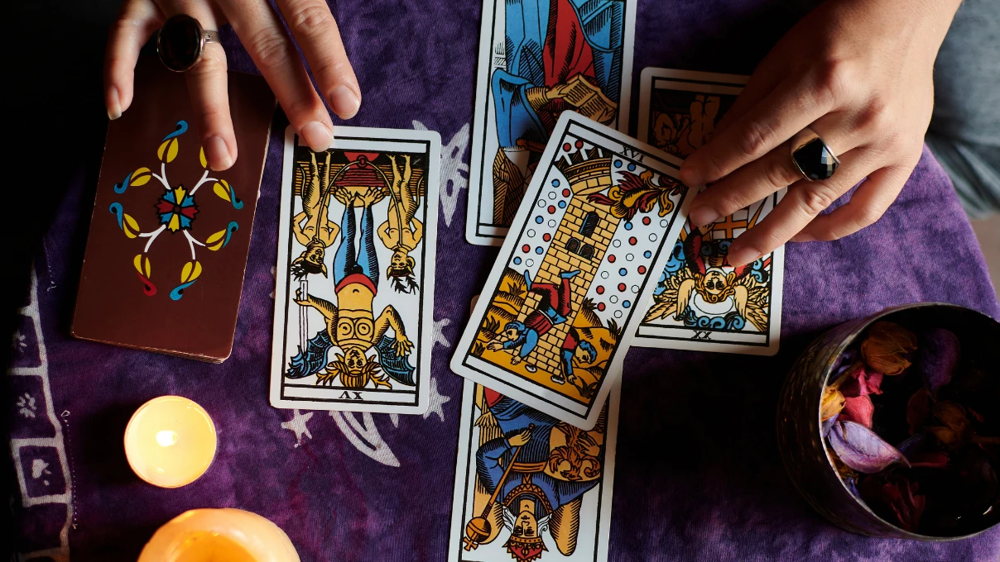

About Our Purpose
The main purpose of this website is to explore the profound connections between celestial movements and tarot archetypes. Our methodology is deeply rooted in traditional practices.
"Astrology is a language. If you understand this language, the sky speaks to you."
We specifically follow the rules of William Lilly, one of the greatest astrologers of the 17th century.

Why combine Horary and Tarot?
Both methods provide precise answers. While Horary uses the exact a question is asked, Tarot relies on universal synchronicity.